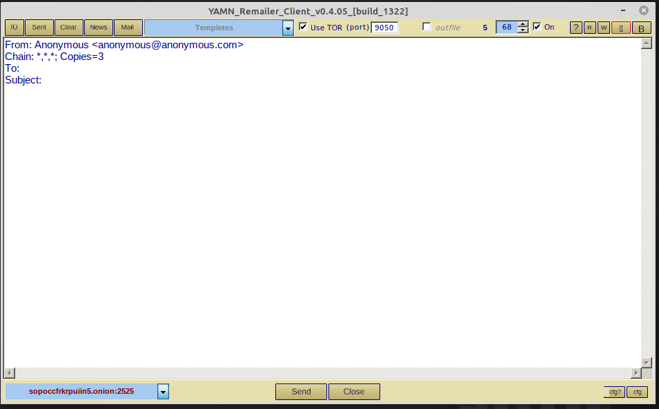

Use YAMN with Tor (Windows 10)
The YAMN Remailer Client by Inwtx has Tor functionality built into it!
If you haven't done so already Download the YAMN Remailer Client by Inwtx.
Extract the contents of the Zip file into a separate folder. We suggest C:\Users\Bob\yamn-client.
To use Tor functionality in the YAMN client you must first install Tor on your computer if you haven't already installed it.
After Tor is installed and running on your computer let's begin using YAMN with Tor.
The YAMN program executable is YAMNclient.exe. Double-click on it.

Make sure there is a checkmark in the "Use tor" box.
Make sure to choose a .onion address from the list in the blue dropdown box near the botton of the program window.
Choose a template (e.g. "Basic To" or "Basic Newsgroups"..) from the blue dropdown box near the top of program window.
Compose your message and then click the "Send" button.
Done!
To send your outgoing YAMN messages through Tor network: